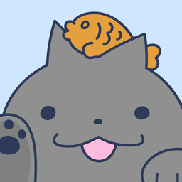
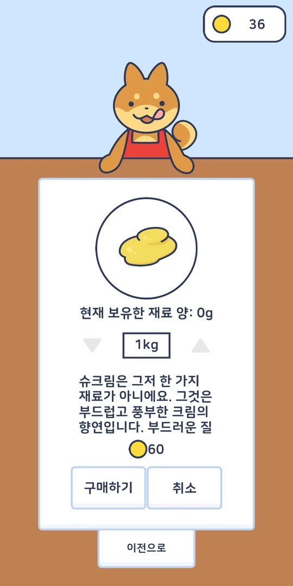
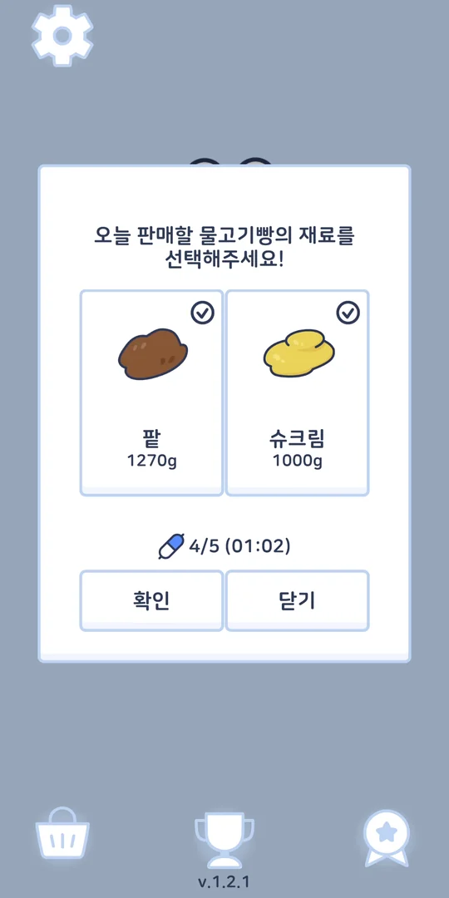
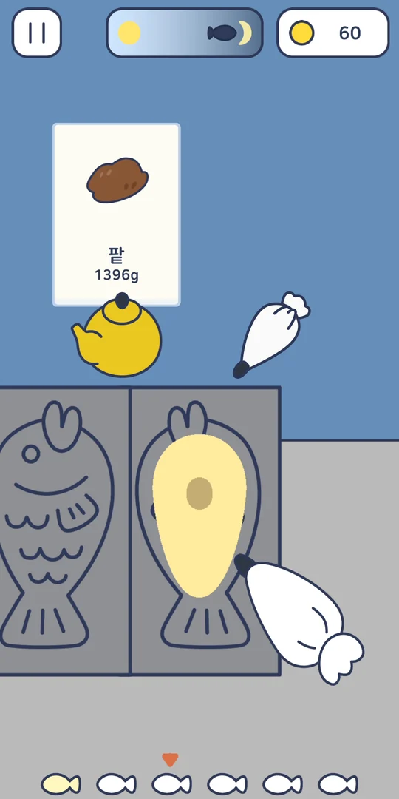
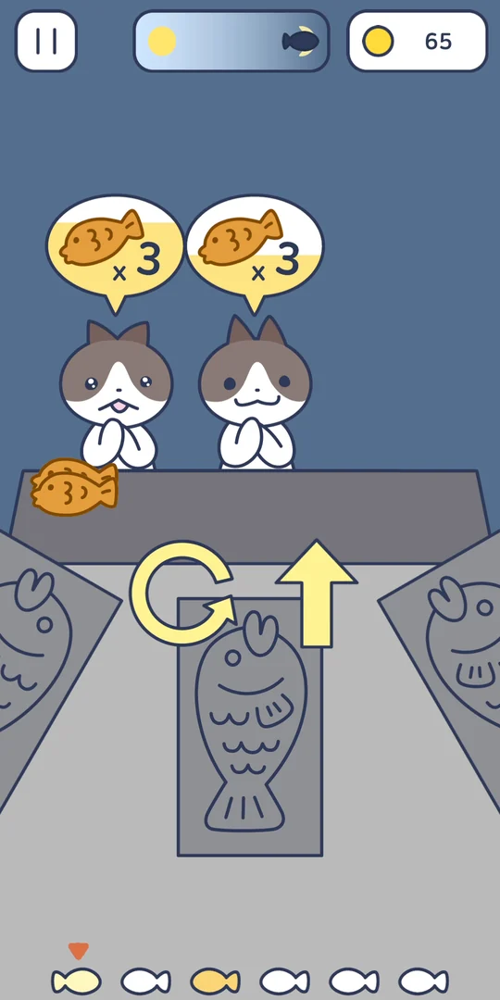
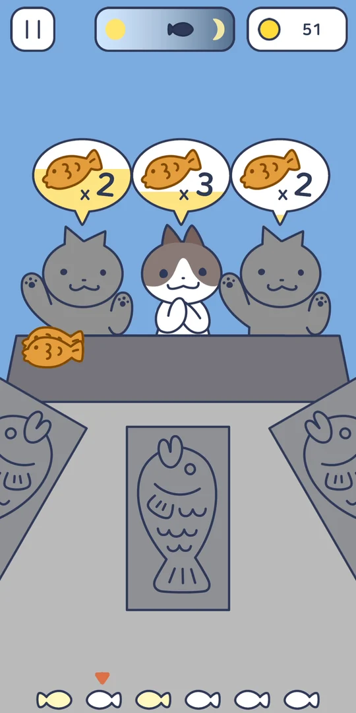
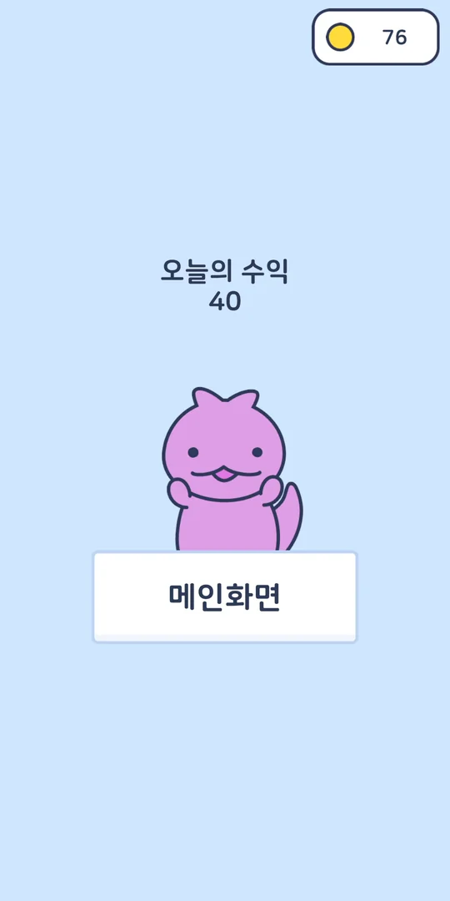

1인 개발 · 기획부터 출시·운영까지 전 과정 담당

물고기빵
직접 물고기빵을 만들어서 파는 모바일 타이쿤 게임.
기획부터 클라우드 연동, 클라이언트 구현, 스토어 출시까지 혼자 완주했습니다.
- 역할
- 기획·디자인·개발·출시·운영
- 기간 · 팀
- 약 4개월 · 1인
2024.04 – 08 - 엔진 · 언어
- Unity 2022.3.5f1, C#
출시 후 6000.3.18f1로 업그레이드 - 출시
- Google Play (Android)
물고기빵 · 직접 물고기빵을 만들어서 파는 타이쿤 게임
아래로 스크롤해서 물고기빵 틀을 열어주세요!
1인 개발 · 기획부터 출시·운영까지 전 과정 담당

직접 물고기빵을 만들어서 파는 모바일 타이쿤 게임.
기획부터 클라우드 연동, 클라이언트 구현, 스토어 출시까지 혼자 완주했습니다.
물고기빵의 주요 시스템을 소개하는 영상입니다.
YouTube Shorts · 1:17 · 한국어 자막
실제 물고기빵 장사처럼 재료를 사서 고르고, 틀에 반죽과 재료를 넣고, 틀을 돌려 구운 뒤 손님에게 팝니다. 하루가 끝나면 수익을 정산합니다.
상점에서 재료를 kg 단위로 구매

오늘 판매할 물고기빵의 재료를 선택

주전자로 반죽을 붓고 짤주머니로 재료를 넣음

틀을 돌려 양면 굽기

손님이 원하는 개수만큼 판매

하루가 끝나면 오늘의 수익 확인

카드를 누르면 과정이 펼쳐집니다
만들면서 정리한 툴과 구현 과정을 글로 남겼습니다. 카드를 누르면 Tistory 블로그 글이 새 탭에서 열립니다.
경험이 부족해 틀, 손님 캐릭터 같은 게임 화면 오브젝트까지 UI Canvas의 Image로 만들어, 하나만 바뀌어도 Canvas 전체를 다시 계산하는 비용이 클 것으로 보임. 다음 프로젝트(아기 공룡 키우기)에서는 Canvas를 UI에만 사용
그림을 배운 적이 없어 시간이 배로 들었고, 리소스가 없으면 개발도 멈춰 규모에 비해 기간이 길어짐. 확장 대신 다른 구현을 경험할 수 있는 새 프로젝트로 넘어감